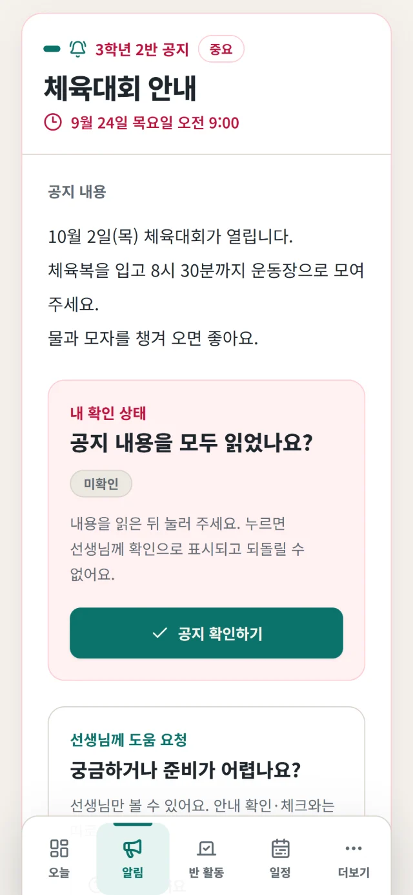
1아침
공지를 올리면 학생 화면 맨 위에 나와요.
- 선생님
체육대회 공지를 올려요. 반 전체나 원하는 학생에게만 보낼 수 있어요.
- 학생
홈 맨 위에서 공지를 읽고 '공지 확인하기'를 눌러요.
- 알림
휴대폰 홈 화면에 추가한 학생은 알림을 받아요. 수업 시간과 밤에는 알림을 바로 보내지 않고, 나중에 모아서 보내요.
학생 화면 맨 위에 아직 보지 않은 공지가 나와요.
공지를 고치면 이미 확인한 학생도 바뀐 내용을 다시 확인해요.
전화번호를 받지 않아요. 궁금한 점은 '도움 요청' 버튼으로 선생님께 보내요.
시작 방법
학교와 학년·반을 고르면 초대 코드가 생겨요.
학생은 휴대폰으로 QR 코드를 찍거나 초대 코드를 입력해 참여를 요청해요.
학생 번호와 이름을 정하고 '모두 승인' 버튼으로 한꺼번에 승인해요.
공지를 올리면 누가 확인했는지 바로 보여요.
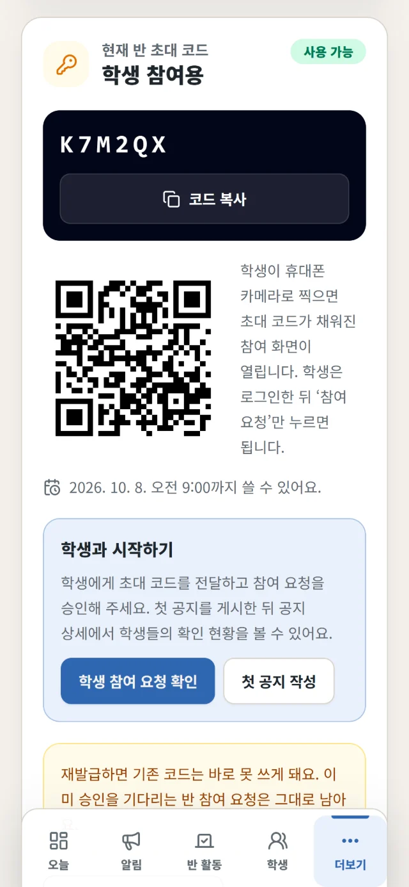
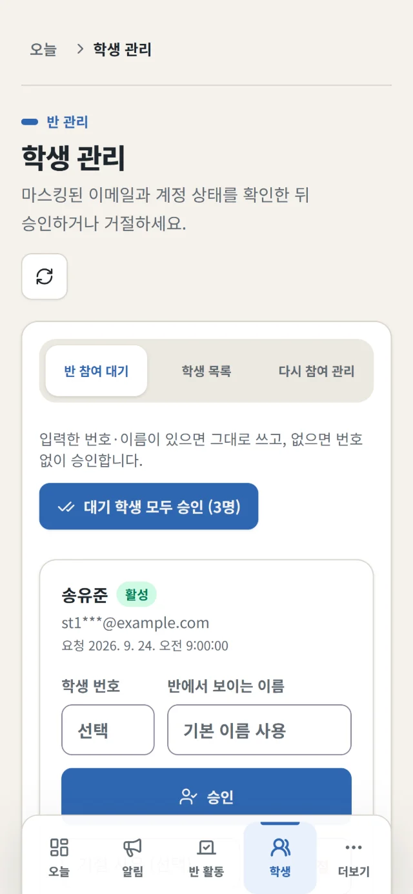
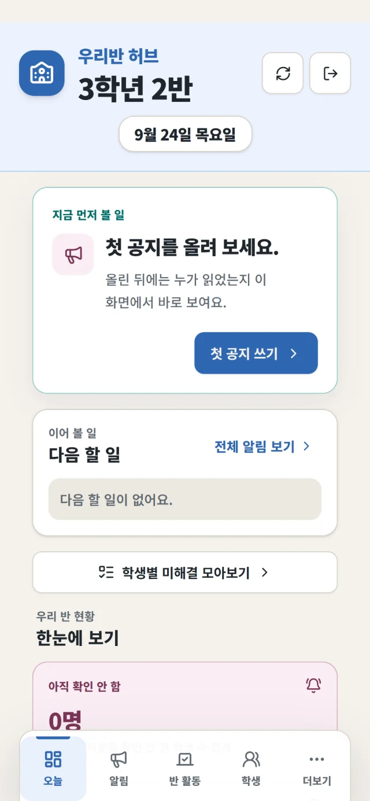
학생을 모두 승인하면 선생님 홈에 '첫 공지 쓰기' 버튼이 먼저 나와요. 처음 쓰는 날에도 무엇을 먼저 할지 알 수 있어요.
사용 예시
체육대회 안내 공지를 올린 날, 선생님과 학생이 하는 일을 시간 순서로 보여 드려요.

1아침
체육대회 공지를 올려요. 반 전체나 원하는 학생에게만 보낼 수 있어요.
홈 맨 위에서 공지를 읽고 '공지 확인하기'를 눌러요.
휴대폰 홈 화면에 추가한 학생은 알림을 받아요. 수업 시간과 밤에는 알림을 바로 보내지 않고, 나중에 모아서 보내요.
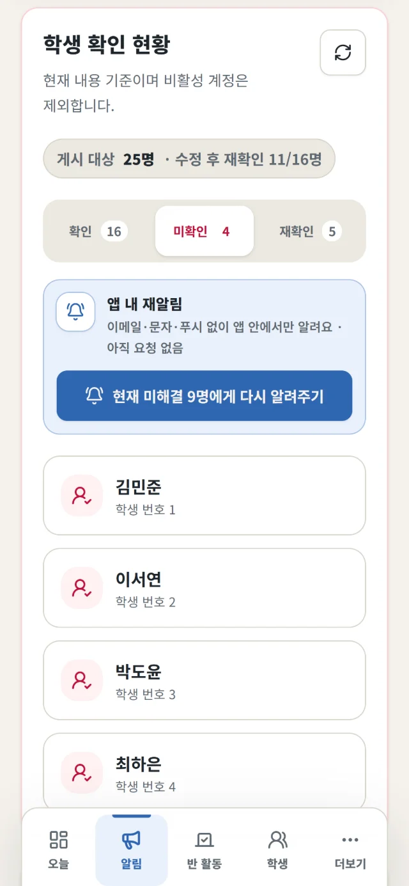
2점심 · 오후
확인한 학생과 아직 확인하지 않은 학생이 나뉘어 보여요.
오후에 공지를 고치면 이미 확인한 학생도 다시 확인해요. 몇 명이 새 내용을 봤는지도 보여요.
아직 확인하지 않은 학생에게만 앱 안에서 다시 알려요.
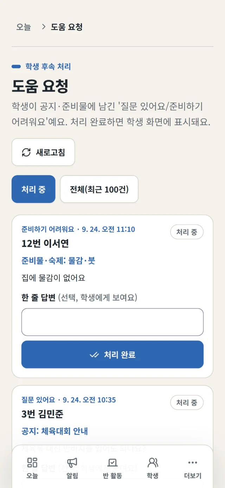
3방과 후
'준비하기 어려워요'를 누르고 "집에 물감이 없어요"처럼 짧게 적어요.
한 줄로 답하고 '처리 완료'를 누르면 학생 화면에 보여요.
'학생별 미해결 모아보기'에서 아직 확인하지 않은 학생을 한 번에 봐요.
화면 속 이름과 날짜는 예시예요.
비교
| 항목 | 단체 대화방 | |
|---|---|---|
| 공지 위치 | 대화에 밀려 올라가요. | 아직 보지 않은 공지가 맨 위에 있어요. |
| 누가 확인했는지 | 알기 어려워요. | 확인한 학생과 확인하지 않은 학생이 나뉘어 보여요. |
| 내용을 고치면 | 다시 봤는지 알 수 없어요. | 다시 확인받고, 몇 명이 봤는지 보여요. |
| 확인하지 않은 학생 챙기기 | 한 명씩 찾아야 해요. | 확인하지 않은 학생에게만 다시 알려요. |
| 질문·어려움 | 모두가 보는 방에서 물어요. | 버튼으로 선생님께만 보내요. |
| 연락처·대화 | 학생들이 한 방에 모여 있어요. | 전화번호를 받지 않고, 학생끼리 대화하지 않아요. |
우리반 허브에는 대화 기능이 없어요. 공지를 전하고 확인하는 데에만 써요.
기능
기능을 네 가지로 나눠 실제 화면과 함께 보여 드려요.
공지·준비물·숙제·일정을 한곳에서 올려요.
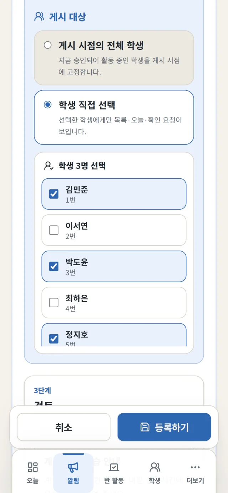
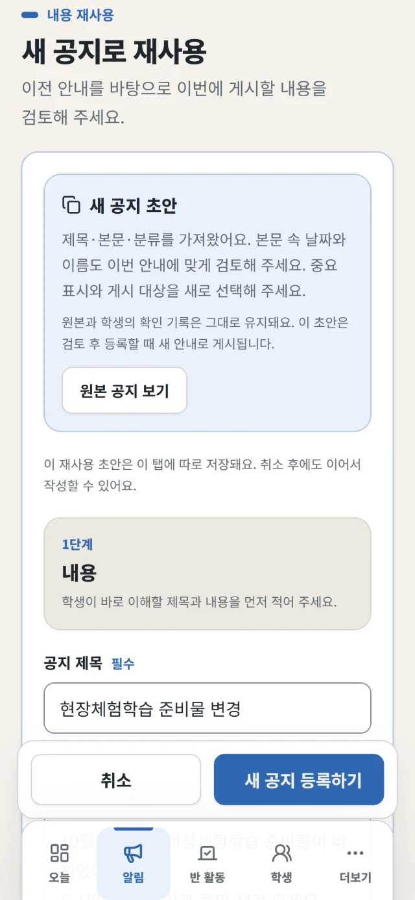
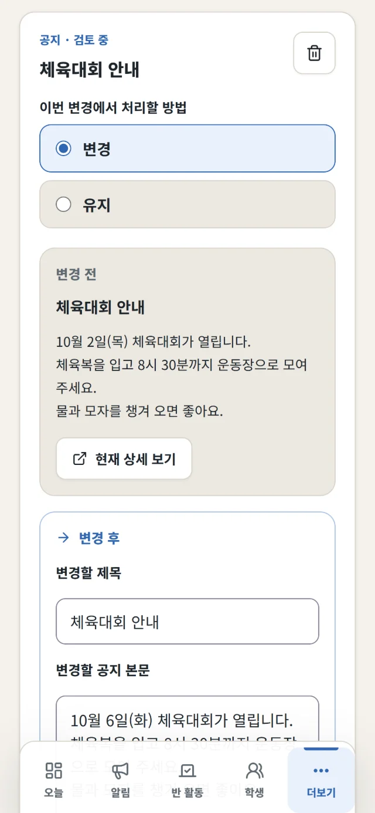
누가 확인했는지 보고, 아직 확인하지 않은 학생을 챙겨요.
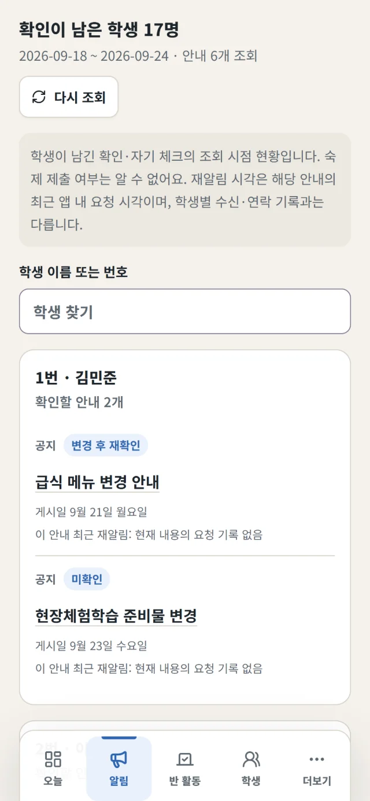
학생 화면에는 오늘 할 일과 놓친 안내가 먼저 나와요.
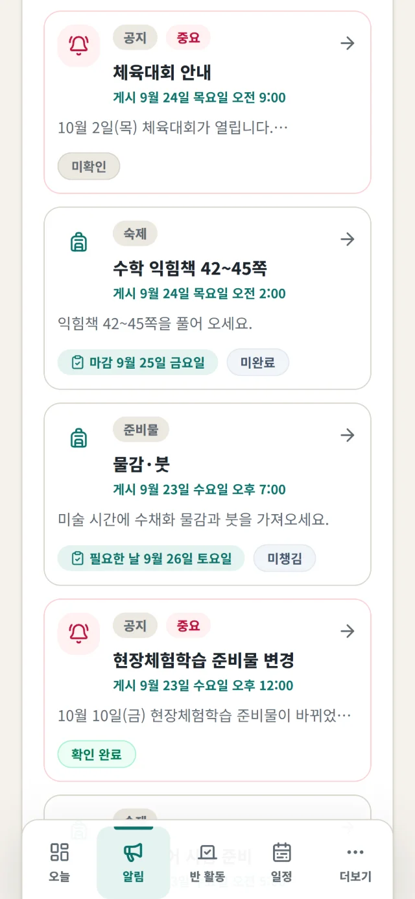
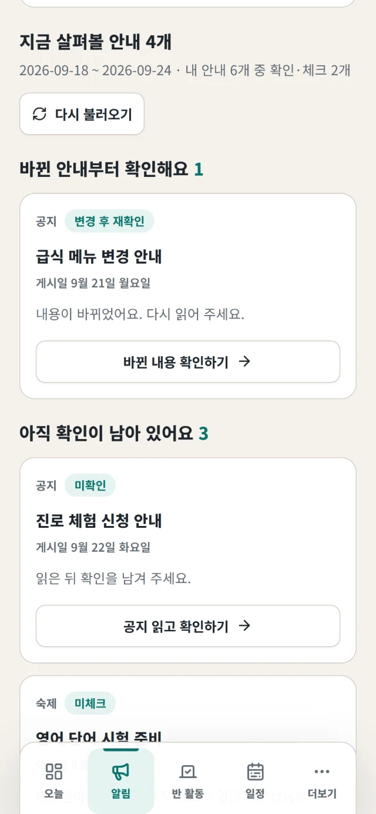
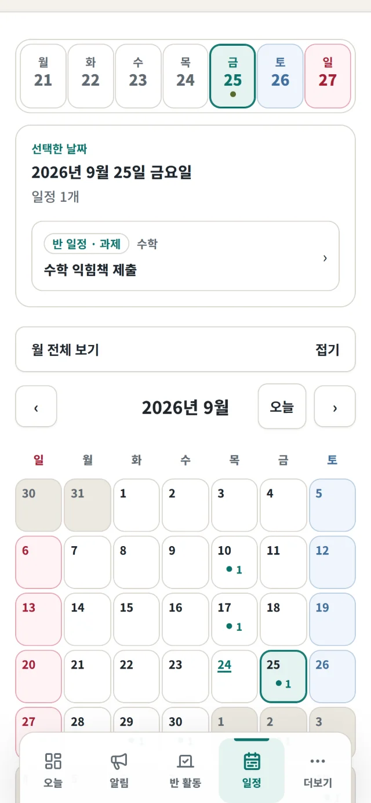
학생 승인부터 학년 말 마무리까지 선생님이 관리해요.
개인정보와 안전
코드를 알아도 승인 전에는 반 자료를 볼 수 없어요.
이메일로 가입하고, 승인 화면에서도 이메일 일부는 가려져요. 학생끼리 대화하는 기능은 없어요.
시범 운영은 중학교 3학년 이상 반만 받아요.
무엇을 왜, 얼마나 보관하는지 누구나 볼 수 있어요.
선생님이 학생을 반에서 뺄 수 있고, 반을 관리한 기록도 남아요.
계정은 직접 삭제할 수 있어요. 시범이 끝나면 학급 자료를 내보내거나 지울 수 있어요.
시범 운영 참여 안내
계획 초안이라 세부 내용은 바뀔 수 있어요.
중·고등학교 담임 선생님 4~6분을 모시려고 해요. 학기 중에 시작하는 것을 권해요.
아니요. 브라우저로 열면 돼요. 알림을 받으려면 휴대폰 홈 화면에 추가해 주세요.
지금은 시범 운영 중이라 참여하시는 선생님께 접속 주소를 따로 알려 드려요. '시범 참여 문의'로 연락 주세요.
시범 운영은 중3 이상(만 14세 이상) 반만 받고 있어요.
괜찮아요. 선생님이 승인해야 들어올 수 있어요. 코드는 기한이 있고, 새로 만들 수도 있어요.
맡은 반 하나로 6주 동안 써요. 1~2주는 지금 방식대로 쓰며 기록하고, 3~6주는 우리반 허브로 안내해요. 기록은 주 1회 1분이면 돼요. 언제든 그만둘 수 있어요.
대화방에서는 누가 봤는지, 고친 내용을 다시 봤는지 알기 어려워요. 우리반 허브는 확인한 학생과 확인하지 않은 학생을 보여 주고, 고치면 다시 확인받아요.
네. 반 전체나 원하는 학생에게만 보낼 수 있어요.
네. 예전 공지·숙제를 불러와 고쳐서 올리면 돼요. 마감일·중요 표시·받을 학생은 새로 골라요.
아니요. 일정을 고치면 묶여 있던 공지·준비물을 한 화면에 모아 줘요. '변경'이나 '유지'만 고르면 한꺼번에 반영돼요.
네. 아직 확인하지 않은 학생에게만 앱 안에서 다시 알려요. 학생마다 무엇을 아직 확인하지 않았는지는 '학생별 미해결 모아보기'에서 한 번에 볼 수 있어요.
아니요. '질문 있어요'나 '준비하기 어려워요'를 누르고 짧게 적으면 선생님께만 가요. 선생님은 한 줄로 답해요.
수업 시간과 밤에는 알림을 바로 보내지 않고, 나중에 모아서 보내요. 같은 공지에 대한 알림은 하나로 합쳐서 보내요.
아니요. 이메일로 가입해요. 전화번호는 받지 않고, 학생끼리 대화하는 기능도 없어요.
아직은 아니에요. 지금은 선생님·학생 화면만 있어요.
학년 말에 반 운영을 끝낼 수 있어요. 시범이 끝나면 학급 자료를 내보내거나 지울 수 있고, 계정도 삭제할 수 있어요.
함께 쓰는 교실 도구
 교실 발표자 뽑기 · Windows용 무료 프로그램
뽑기 시간
설치·인터넷·학생 이름 없이, 번호로 발표자를 뽑아요.
뽑기 시간 보러 가기
교실 발표자 뽑기 · Windows용 무료 프로그램
뽑기 시간
설치·인터넷·학생 이름 없이, 번호로 발표자를 뽑아요.
뽑기 시간 보러 가기